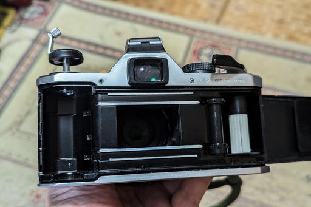

昨日の日記と同様に、以下 X や他の SNS へのポストに手を加えたものになります。
PENTAX17 のサイズが往年の名機 OLYMPUS PEN や他のコンパクトカメラと比べてやたらと大きい件ですが、いろんなところで Dis られています。こんなのコンパクトじゃねぇとか、昭和の頃のコンパクト・カメラを見習えとか、まぁにぎやかです。
PENTAX 17 の YouTube での動画や、17 の裏蓋を開けてる画像などを見ていて、自分はふと思ったのです。これって実は以前のコンパクト・フィルム・カメラように小さく作れるけど、あえてこのサイズにしたんじゃないかと。
特に裏蓋を開けた画像を見ていると、下図の自分が 43 年近く前から愛用している PENTAX MX と感光窓 (正式の名前はわからないのですが) のサイズが違うくらいで、すごく似ています。もちろんハーフサイズカメラなので、フィルム送りもハーフサイズに合わされていますけど。
つまり 35mm サイズのカメラと構造にあまり変わりがない。
さらに言うと PENTAX 17 のサイズは往年のコンパクト・フィルム・カメラのサイズと言うよりは、明らかに小型一眼レフ・カメラに非常に近いサイズになっています。
なので自分の頭にはこのような考えが自然と浮かんでしまいました。
PENTAX 17 って将来作ろうとしている、あるいはいま現在開発中と噂される 35mm サイズ・フィルム・カメラと、多くの主要パーツを共用する前提で設計されているのでは？
まぁ勝手な推測なのですけど。
とはいえ主要パーツの大半を流用できるなら今後のフィルム・カメラ製造のコストダウンにもつながります。もやは庶民に手が届かなくなってしまったと言ってよい写真機ですが、我々のような庶民にも手が届きそうなぎりぎりの価格で販売できることを、PENTAX は目指しているのかもしれません。
いや、昔からコストダウンのためにそうしてきたんだよ、と言われたらそうなのかもしれませんけど。
でも PENTAX17 の裏蓋が開いた画像を見ていて、35mm サイズのバカチョンカメラも一眼レフも、かなり現実的に自分には思えてきました。
つまり何が言いたいのかというと PENTAX 17 のあの大きさに、これからもフィルム・カメラを作りたい、あるいは、これからもフィルム・カメラを作り続けるのだという関係者の強い意思を感じるのです。
バカチョンカメラという言葉を目にすると、バカとは何事か！？と烈火の如く怒って SNS などに書き込んでしまいそうな人が続出する昨今ですが、皆様はいかがお過ごしでしょうか。
自分はバカチョンカメラと聞くと、やはり 2000 年ごろまで数多く存在した懐かしきカメラたちを思い出します。そもそもバカチョンカメラという呼び方は蔑称ではありません。その正反対です。誰もが愛すべき存在としてバカチョンカメラと呼んでいました。
バカチョンカメラという名前の由来はいろいろあるみたいですが、自分の周囲では撮影技術を知らないバカでもちょんでも撮れるカメラという意味で使われることが多かったと記憶しています。一眼レフと違ってなーんも考えなくても綺麗な写真が撮れる、自分でもそういう認識でした。
それに対して一眼レフは本格的なカメラという認識です。何も知らずには使いこなせない四天王、ラスボスのような存在です。
一般家庭での一眼レフのたいていの出番は、旅行のとき、子が生まれたとき、この入園入学式、運動会などのイベント、卒園卒業式、成人式、結婚式、葬儀、等々のライフイベントに限定されることが多かったと思います。写真を道楽にするという人はどちらかというと少数派でした。
もちろんこういったライフイベントのときもバカチョンカメラはいつも手元にあって、常に寄り添ってくれていました。
いえ、むしろ我々の日常に寄り添っていたのはバカチョンカメラの方でした。ほんの些細な日常を記録していたのはどちらかというとバカチョンカメラの方でしょう。現在のスマホのカメラくらいに身近な存在でした。
バカチョンカメラですが、当然ながら最初からバカでもちょんでも使えるカメラではありませんでした。というよりもバカチョンカメラと呼ばれるようになるのはずっとあとの方です。
庶民向けに発売された最初のコンパクト・カメラがどのメーカーのどの機種だったのかはリアルでは知りません。調べればわかるのでしょうけど。
自分が最初に目にしたコンパクト・カメラは OLYMPUS PEN でした。死んだ親父が自分が生まれるまだ前に買ったものです。ただ PEN シリーズのどの機種なのかは記憶にありません。レンズの周りの円形のセレン受光素子はあったので、EES までのどれかだとは思うのですが。
当然 ASA の設定も自分でしないといけませんし、フィルムの巻送りも、巻き戻しも自分でしないといけません。また AE も現在のように完璧とは言い難く、プリント時の補正は必須でした。
そんなコンパクト・カメラでしたが、年を経るに従って、AE も進化し、ズーム機能も入り、AF も入っていきました。フィルムを自動送りし、自動巻き戻すようになりました。さらにはフィルムの自動装填までするようになり、フィルムの ASA はパトローネに刻印されている DX コードでを自動設定するようになったりとどんどん進化していきました。
そして最終的にはズームを決める、ストロボを炊くか炊かないかを決める、ファインダーを覗く、レリーズボタンを押すこと以外何もしなくていい、みんなのバカチョンカメラへとコンパクト・カメラは進化します。
便利なバカチョンカメラは爆発的に普及しました。
家庭によっては複数台あった家庭もあるかもしれません。お金があって裕福だったから複数台持ちになったわけではありません。高機能で便利だったのにも関わらず安かったのです。
カメラの市場は戦前のほそぼそとした時期から始まって徐々に拡大していきましたが、その歴史の過程で、パーツを作る工場や、パーツを流通させる商流、物流も拡大していき、作った製品を販売していくための商流、物流も拡大していきました。もちろんカメラを使う我々をも含め、カメラをめぐる生態系が徐々に広がっていった歴史的経緯があります。
そんなバカチョンカメラですが、今までに 2 度は危機に陥っていると自分は理解しています。むろん作る側の人たちからすると危機は何度もあったのかもしれませんが、使う側が、あぁ、これはピンチだと明確に認識できたのは 2 度です。
最初の危機はレンズ付きフィルム、つまり写ルンですの登場です。
その頃にすでにバカチョンカメラという呼称が使われていたのかは記憶にありませんが、コンパクト・カメラを作っていたメーカーにとって、写ルンですの登場は一大事件だったのではないかと推察します。
写ルンですの恐ろしいところは、レンズはプラ製 1 枚で、しかもあれほどチープな作りなのに、製品名通りちゃんと写ルンです。
しかも使う側はズームこそできないものの、フラッシュを炊くかどうか決める、ファインダーを覗く、シャッターを押す、フィルムを巻くだけで写真が撮れてしまうのです。フィルムを巻き戻す必要もなく、写ルンですごと DPE に出せば、30 分程度で現像済みフィルムとプリントが返ってくる。超便利！！
画質もそんなに悪いわけではない。サービスサイズのプリントを見る限り、さほど通常のコンパクト・カメラと変わらない。そんなものが 1000 円もしない価格で、どこででも売られていました。
カメラを作っているメーカーとしては苦しかったのではないかと推察します。
とはいえ、写ルンですの登場がコンパクト・カメラに様々な便利機能を加えていくきっかけになったのかもしれません。コンパクト・カメラは価格を抑えながらもバカチョンカメラへと続く道を歩み始めます。
そんなピンチに直面したコンパクト・カメラでしたが、それでもコンパクト・カメラと写ルンですとその末裔、派生カメラは共存していました。やはり写ルンですで撮れないものも多かったので、そういうものは我々はコンパクト・カメラで撮っていたからです。写ルンですはズームもないですし。
しかもカメラ自体が安かった。メーカが安く作れるだけのインフラが、当時この世界に存在したからです。
そんなコンパクト・フィルム・カメラ、バカチョンカメラでしたが 2 度目のピンチで終焉を迎えます。カメラのデジタル化です。フィルム・カメラの生態系自体がこれでほぼ完全に終焉を迎えます。カメラを製造するための全て、供給するための全てがこの世からほぼ完全に消失します。